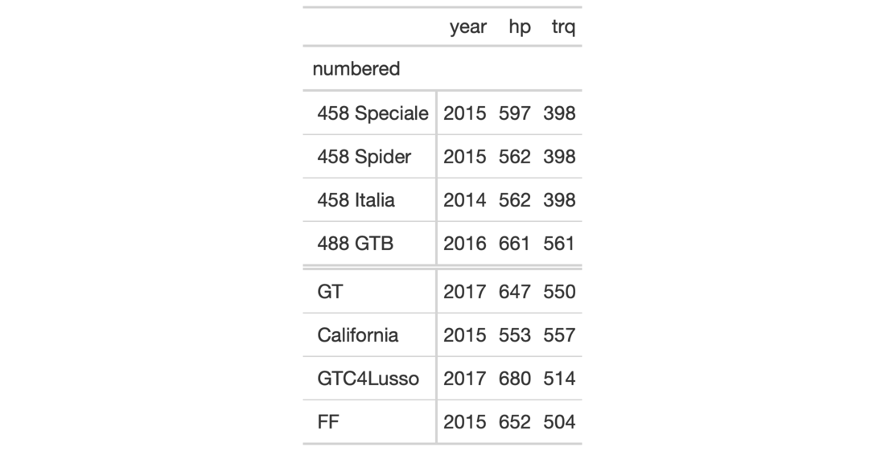
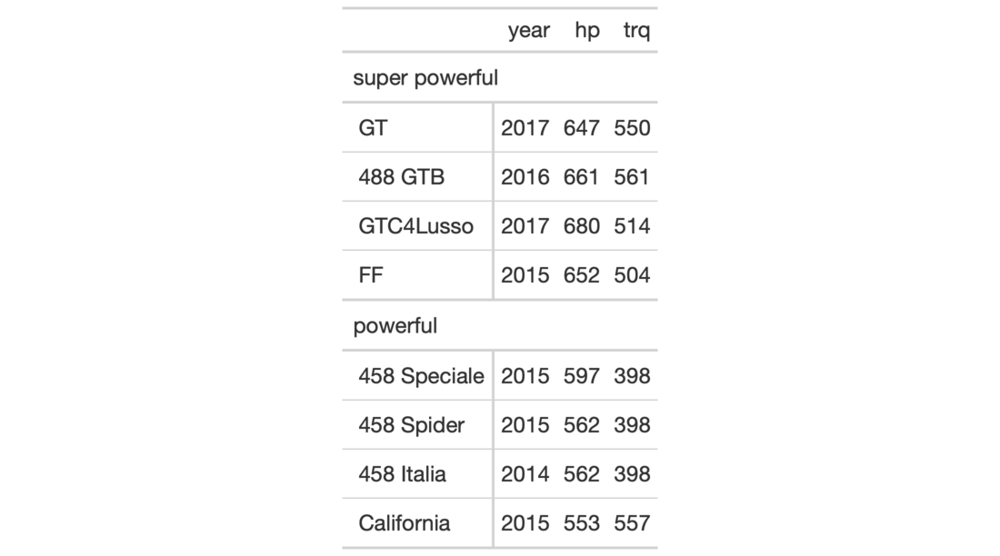

| tab_row_group {gt} | R Documentation |
Create a row group with a collection of rows. This requires specification of
the rows to be included, either by supplying row labels, row indices, or
through use of a select helper function like starts_with(). To modify the
order of row groups, use the row_group_order() function.
To set a default row group label for any rows not formally placed in a row
group, we can use a separate call to tab_options(row_group.default_label = <label>). If this is not done and there are rows that haven't been placed
into a row group (where one or more row groups already exist), those rows
will be automatically placed into a row group without a label. To restore
labels for row groups not explicitly assigned a group,
tab_options(row_group.default_label = "") can be used.
tab_row_group(data, label, rows, id = label, others_label = NULL)
data |
A table object that is created using the |
label |
The text to use for the row group label. |
rows |
The rows to be made components of the row group. Can either be a
vector of row captions provided in |
id |
The ID for the row group. When accessing a row group through
|
others_label |
This argument is deprecated. Instead use
|
An object of class gt_tbl.


2-4
Other Create or Modify Parts:
tab_footnote(),
tab_header(),
tab_options(),
tab_source_note(),
tab_spanner_delim(),
tab_spanner(),
tab_stubhead(),
tab_style()
# Use `gtcars` to create a gt table and
# add two row groups with the labels:
# `numbered` and `NA` (a group without
# a title, or, the rest)
tab_1 <-
gtcars %>%
dplyr::select(model, year, hp, trq) %>%
dplyr::slice(1:8) %>%
gt(rowname_col = "model") %>%
tab_row_group(
label = "numbered",
rows = matches("^[0-9]")
)
# Use `gtcars` to create a gt table;
# add two row groups with the labels
# `powerful` and `super powerful`: the
# distinction being `hp` lesser or
# greater than `600`
tab_2 <-
gtcars %>%
dplyr::select(model, year, hp, trq) %>%
dplyr::slice(1:8) %>%
gt(rowname_col = "model") %>%
tab_row_group(
label = "powerful",
rows = hp <= 600
) %>%
tab_row_group(
label = "super powerful",
rows = hp > 600
)